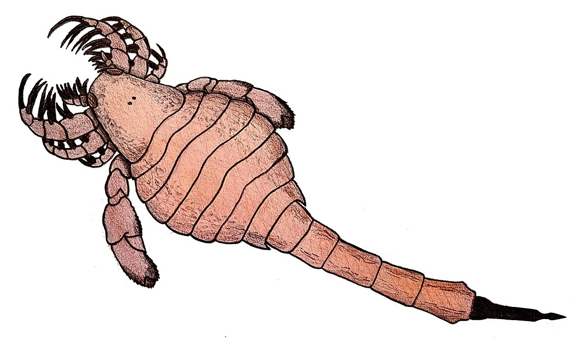
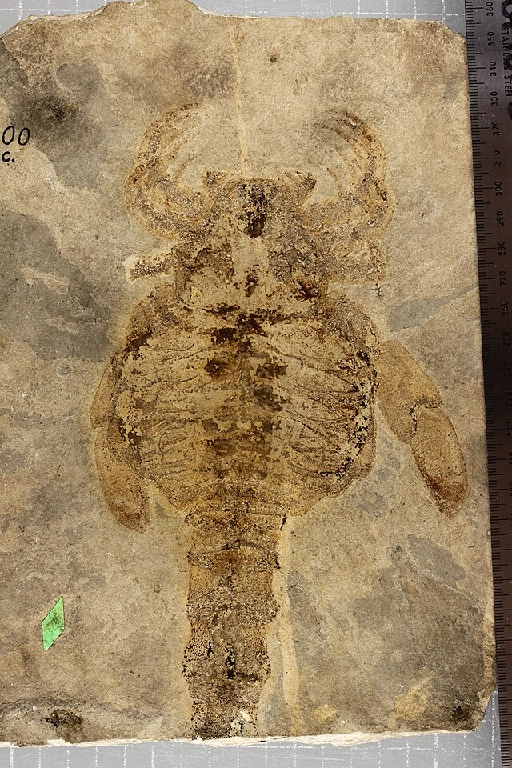
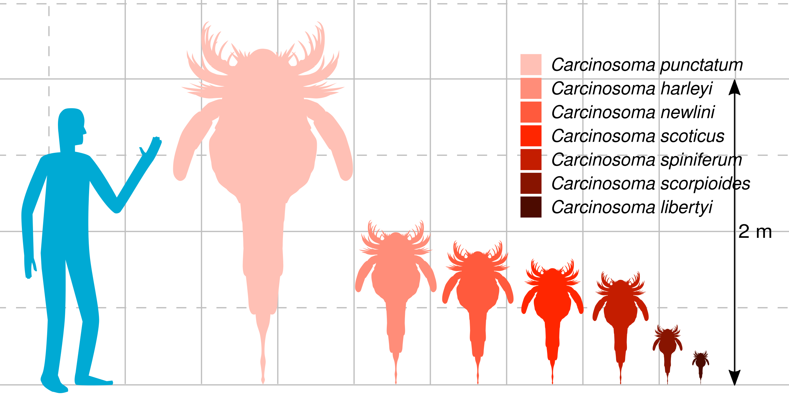

Поздний силур (~420 млн лет назад)
США (штат Индиана)
Кокомовский доломит
В работе Kjellesvig-Waering (1958) описан экземпляр Carcinosoma newlini из силурийского доломита Кокомо (Индиана), который сохранил прижизненную окраску. Непористый, непроницаемый характер породы предотвратил замещение хитина минералами, позволив сохранить органический материал. Окраска изучена практически у всего тела, за исключением мягких тканей и хелицер, которые не сохранились. Вся спинная сторона животного, включая головогрудь, среднюю часть тела и сегменты хвоста, имела светло-коричневый цвет. Нижняя сторона тела, включая жаберные крышки и брюшные пластины, была заметно светлее спины. Она описывается как светло-коричневая, почти бежевая (желтовато-коричневая). При этом чешуйки на животе были темнее основного фона. Панцирь ракоскорпиона покрывали различные чешуйки, которые создавали цветовой контраст: удлиненные чешуйки были темно-коричневыми, а на самых кончиках переходили в черный цвет. Более мелкие чешуйки, расположенные вдоль передних краев хвостовых сегментов, были просто коричневыми, но все равно хорошо выделялись на фоне более светлого панциря. Ходильные ноги были темно-коричневыми. Чешуйки на них имели черные кончики. Острые шипы, которыми были усеяны ноги, у основания были темно-коричневыми, а к кончикам — чернели. Самые ближние к телу членики ходильных ног были светло-коричневыми с более темными чешуйками. Специальные жевательные выросты на основаниях этих ног, с помощью которых ракоскорпионы измельчали пищу, были полностью черными. Основная часть плавательных ног была коричневой, а широкая уплощенная часть на конце была окаймлена вытянутыми чешуйками, которые переходили в черный цвет. Шипы на самом конце плавательной ноги также были черными. Хвостовой шип был полностью черным.
Прямое наблюдение сохранившихся органических покровов.

Художественная реконструкция Carcinosoma newlini.
Ископаемый образец Carcinosoma newlini.
Размеры различных видов карциносом.